Олень - лучший глемпинг Тулы
Дизайн и разработка цифровых сервисов, сайтов и приложений с нуля. Поиск новых решений для развития существующих продуктов
Задача:
Дизайн и разработка цифровых сервисов, сайтов и приложений с нуля. Поиск новых решений для развития существующих продуктов


Дизайн
Дизайн и разработка цифровых сервисов, сайтов и приложений с нуля. Поиск новых решений для развития существующих продуктов
Дизайн и разработка цифровых сервисов, сайтов и приложений с нуля. Поиск новых решений для развития существующих продуктов Дизайн и разработка цифровых сервисов, сайтов и приложений с нуля. Поиск новых решений для развития существующих продуктов

Команда проекта
Дизайн и разработка цифровых сервисов, сайтов и приложений с нуля. Поиск новых решений для развития существующих продуктов
